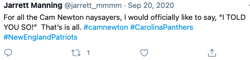
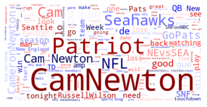
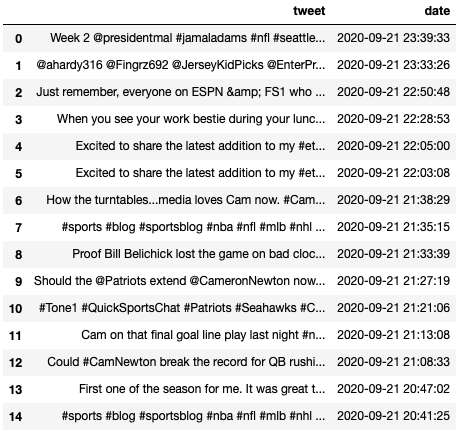
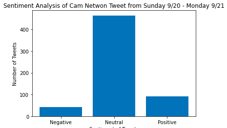
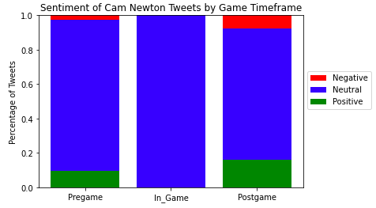
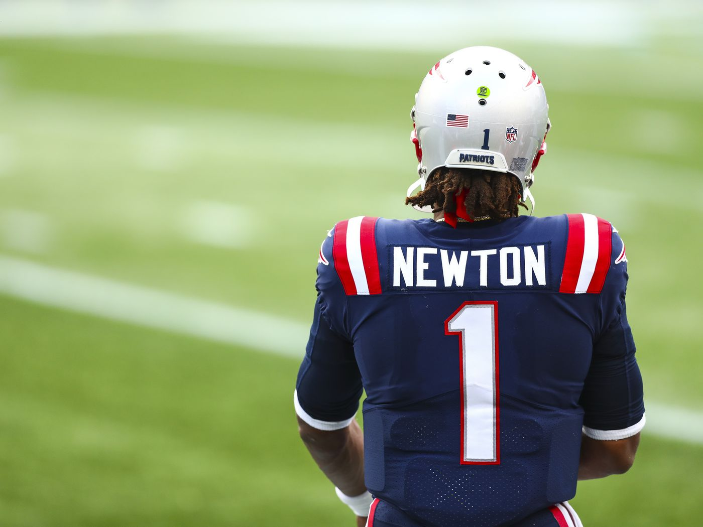

Overview
Scanning text for the overall sentiment, or tone, of the writting is a prominent use case in the world of text analysis and natural language processing. Being able to take a quick pulse on social media of how your customer base feels about a topic or your company is easier than hiring a PR company to perform an indepth, time consuming survey analysis. Although not as trustworthy (Twitter is not the best place to go if you are looking for words of wisdom or encouragement), it is an effective tool for quickly idenitfying how the world feels about a topic.
 Sample in game tweet.The Data
 Wordcloud showing most popular words from the tweets I collectedUsing Twitters' devleoper API, I collected tweets with the phrase Cam Newton contained within it from September 20th, 2020 (pregame) until September 21st, 2020 (postgame). The Twitter API search pulled back almost 600 Tweets from all around the world throughout the entirety of the game and postgame. I then categorized the Tweets based on their day and time either as Pre-Game (Sunday before 8:30 PM EST), In-Game (Sunday from 8:30 PM EST - 11:59 PM EST) amd Post-Game (Any Tweet on Monday 9/21).
Method
Once the data was collected and cleaned, I created two Python functions to categorize the data. First, I created a polarity score function to determine the sentiment of the tweet. The polarity score ranges from -1 to 1 and is applied to each word within a string. Positively connoted words receive a score of 1 while negative words are marked with -1. The average of these scores within a string produces the final polarity score.
After each tweet was assigned a polarity score, I created a Python function to determine if the Tweet should be classified as either positive, negative, or neutral. To create the scale, I derived one standard deviation from the distribution of the data. This came out to 0.27. So for a positive Tweet, it should have a polarity score greater than 0.30. A negative Tweet would have a polarity score less than -0.30. A neutral tweet would be between those two ranges; -0.30 and 0.30.
 Tweet counts by polarity sentiment categoryResults
As you can see above, the overwhelming majority of Tweets were classified as neutral. I find that a little strange based on the typical hot take nature of Twitter. However, doing a quick spot check of the Tweets, the model holds up. I could potentially shrink the range to allow for more negative and positive Tweets. However, I think my decision to go out one standard deviation is solid. Thankfully, for Cam Newton's sake, the positive tweets saw the largest shift from pre to post game. Negative Tweets remained relatively flat from about 14% pre-game, to 16% post-game. Positive Tweets went up about 15% from 13% pre-game, to 38% post-game. I believe this is mainly due to Cam almost leading the Patriots to victory over a far superior team that most experts believed would win handily.
 Tweet sentiment trending pre-in-post gameConclusion
Wikipedia defines sentiment analysis as "the use of natural language processing, text analysis...to systematically identify, extract, quantify, and study affective states and subjective information. Sentiment analysis is widely applied to voice of the customer materials such as reviews and survey responses, online and social media, and healthcare materials for applications that range from marketing to customer service to clinical medicine". Using sentiment analysis a company can get a feel for how their new product being recieevd by the public or understand how a recent news story is affecting their image overall. It allows for compnaies to quickly react, either positively(continue to promote the positive news) or negatively(stop the bleeding before it gets out of control), to the public's perception of them.
